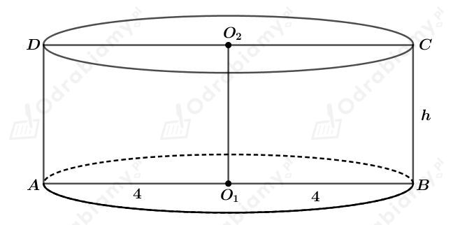
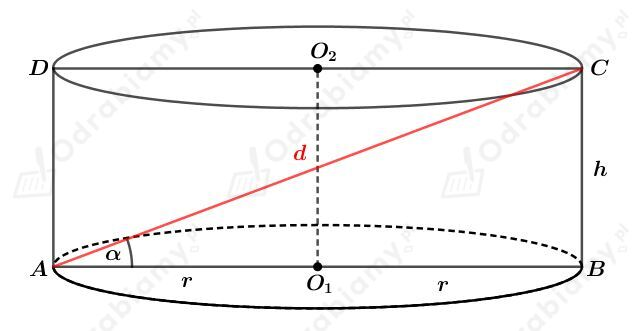

| Pole powierzchni całkowitej walca o promieniu podstawy r i wysokości długości h wyraża się wzorem: gdzie Pp jest polem powierzchni podstawy walca, a Pb - polem jego powierzchni bocznej. |
a)
Podstawą walca jest koło o promieniu długości r. Mamy zatem:
Powierzchnią boczną walca jest prostokąt, którego jeden bok ma długość h, a drugi ma taką długość jak obwód podstawy, czyli obwód koła o promieniu długości r. Wyznaczmy pole powierzchni bocznej tego walca. Mamy:
Wyznaczmy pole powierzchni całkowitej tego walca. Mamy:
b)
Dany jest walec, którego podstawą jest koło o promieniu długości r i wysokości długości 10 cm.
Wiemy, że pole powierzchni całkowitej tego walca jest równe 40𝜋 cm2. Korzystając ze wzoru na pole powierzchni całkowitej walca mamy:
Zatem ostatecznie
Wyznaczmy pole koła będącego podstawą tego walca. Mamy:
| Pole powierzchni całkowitej walca o promieniu podstawy r i wysokości długości h wyraża się wzorem: gdzie Pp jest polem powierzchni podstawy walca, a Pb - polem jego powierzchni bocznej. |
Rysunek:

Pole przekroju osiowego tego walca jest równe 40 cm2. mamy zatem
Wyznaczmy pole powierzchni całkowitej tego walca. Mamy:
| Pole powierzchni całkowitej walca o promieniu podstawy r i wysokości długości h wyraża się wzorem: gdzie Pp jest polem powierzchni podstawy walca, a Pb - polem jego powierzchni bocznej. |
Rysunek:

Wiemy, że
oraz
Korzystając ze związku między długościami boków w trójkącie o kątach 30o, 60o, 90o mamy:
oraz
czyli
Wyznaczmy pole powierzchni całkowitej tego walca. Mamy: